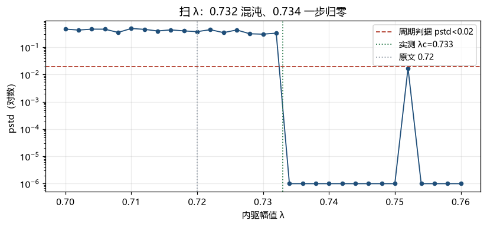

2. 临界阈值：0.72 还是 0.733？#
原文说”经大量实验验证约 0.72”，没给判据、没给步长、没给仿真时长。 这三项任一变化都会让”阈值”漂移，所以先把口径钉住：
判据：每个驱动周期在精确的 \(\tau=2\pi k\) 时刻插值取 \(x\)，取稳态后半段标准差 \(p_{std}\)；
周期态判据 \(p_{std}<0.02\)；
步长 \(h=2\pi/300\)（整除 \(2\pi\)），仿真 600 s、丢弃前 300 s。
为什么必须”精确 2π 时刻”#
这是本次复现最重要的一处方法学修正。若按”每 \(N\) 步采一次”（\(N=\mathrm{round}(2\pi/h)\)）， \(h\) 不整除 \(2\pi\) 时采样相位每周期漂一点点，累积起来让 Poincaré 点沿着轨道游走， \(p_{std}\) 凭空多出 0.1 量级。实测对照：
采样方式 |
\(\lambda=0.734\) 的 \(p_{std}\) |
判读 |
|---|---|---|
每 314 步采一次（\(h=0.02\)，\(2\pi/h=314.159\)） |
0.103 |
❌ 误判为混沌 |
精确 \(2\pi k\) 时刻插值 |
0.000000 |
✅ 收敛到一点 |
也就是说，阈值 0.736 与 0.733 的差别，一半来自判据伪迹。
import sys, json, pathlib
import numpy as np
import matplotlib.pyplot as plt
sys.path.insert(0, "_src")
import s2sim as S
DATA = pathlib.Path("_data")
OUT = pathlib.Path("../复现输出/s2-figs"); OUT.mkdir(parents=True, exist_ok=True)
plt.rcParams.update({
"figure.dpi": 110, "font.size": 10,
"font.sans-serif": ["Microsoft YaHei", "SimHei", "DejaVu Sans"],
"axes.unicode_minus": False, "axes.grid": True, "grid.alpha": .25,
})
FIGS = []
def savefig(name):
p = OUT / name
plt.savefig(p, bbox_inches="tight", facecolor="white")
FIGS.append(str(p)); plt.show(); print("图已保存:", p)
def load(name):
return json.loads((DATA / f"{name}.json").read_text(encoding="utf-8"))
d = load("sweep")
lam = np.array(d["lam"]); p = np.array(d["pstd"])
print(f"临界带 {d['jump']} -> lambda_c ≈ {d['lam_c']:.4f} （原文 {d['paper']}）")
fig, ax = plt.subplots(figsize=(7.6, 3.6))
ax.semilogy(lam, np.maximum(p, 1e-6), "o-", ms=4, color="#1f4e79", lw=1.2)
ax.axhline(0.02, color="#b3402f", ls="--", lw=1.2, label="周期判据 pstd<0.02")
ax.axvline(d["lam_c"], color="#2e7d4f", ls=":", lw=1.2, label=f"实测 λc={d['lam_c']:.3f}")
ax.axvline(d["paper"], color="#9aa3ad", ls=":", lw=1.2, label="原文 0.72")
ax.set_xlabel("内驱幅值 λ"); ax.set_ylabel("pstd（对数）")
ax.set_title("扫 λ：0.732 混沌、0.734 一步归零")
ax.legend(fontsize=9)
plt.tight_layout(); savefig("s2-02-临界阈值.png")
print("注意 0.734 之后 pstd 直接落到 1e-6 以下 —— 精确采样下周期态是真正的『一点』。")
临界带 [0.732, 0.734] -> lambda_c ≈ 0.7330 （原文 0.72）

图已保存: ..\复现输出\s2-figs\s2-02-临界阈值.png
注意 0.734 之后 pstd 直接落到 1e-6 以下 —— 精确采样下周期态是真正的『一点』。
读法#
相变是突变，不是渐变：\(0.732\to0.734\) 之间 \(p_{std}\) 从 0.33 直接归零。
论文的 0.72 与实测 0.733 差 0.013（约 1.8%）。差异来源不是”论文错了”， 而是 \(k\)、判据、噪声、求解器四者共同决定临界值，原文未交代其中任何一项。 引用 0.72 时必须连条件一起给。
另有一个副作用值得记住：\(p_{std}\) 在周期态精确为 0，意味着判据本身没有”软”过渡区， 噪声一旦把点推开就会立刻破零。第 5 章会看到，这正是 \(-23\) dB 判决很”脆”的原因。